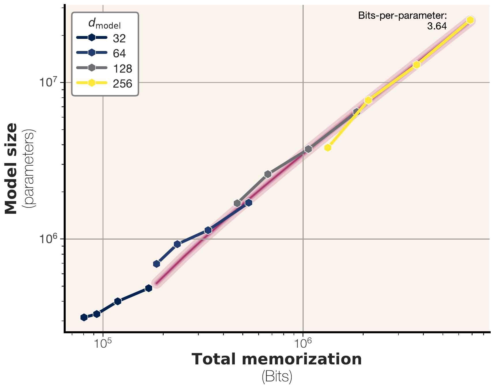
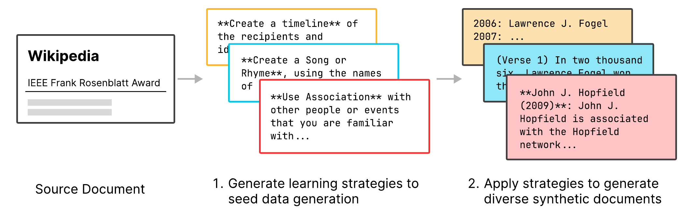
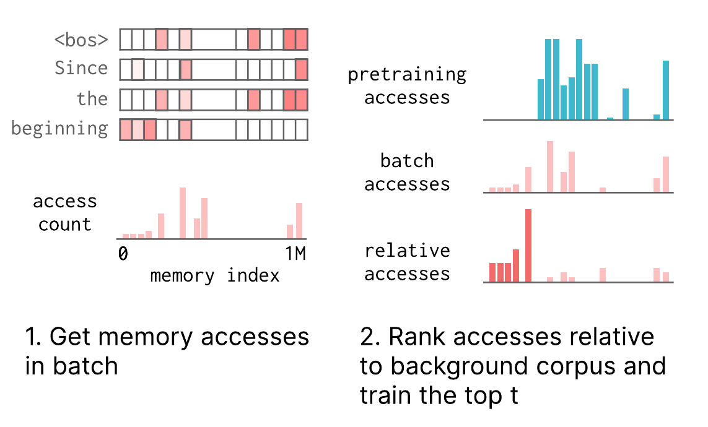
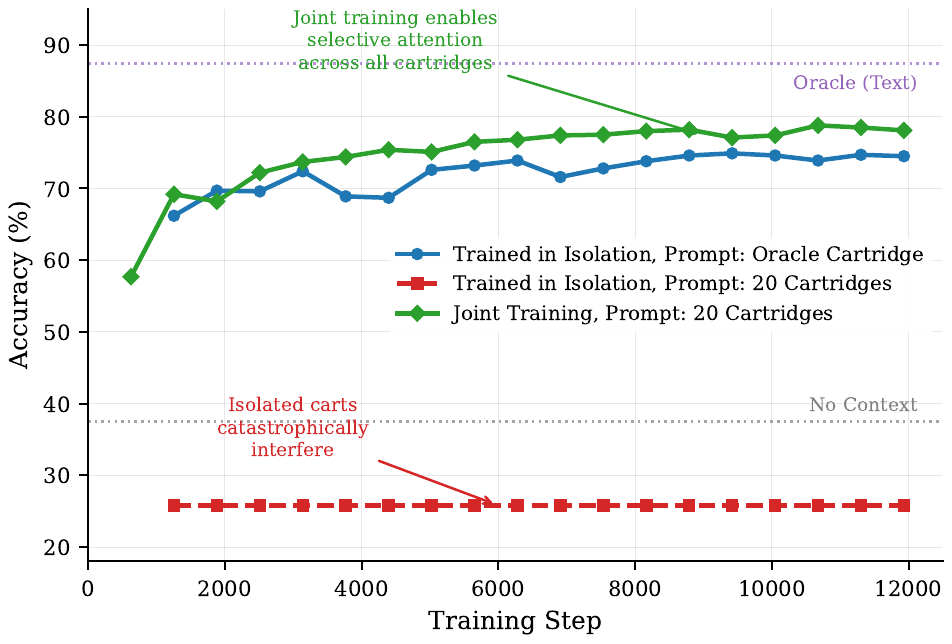

核心判断
这六篇工作的共同结论不是“LLM 已经拥有无限记忆”，而是存储容量通常早于可用记忆出现，真正困难的是把信息写到正确位置、在正确查询下读出、与其他信息隔离，并允许更新、删除和追溯。约 3.6 bits/parameter 只回答了特定 GPT-2 实验中的容量估计；Active Reading 与 Self-Study 解决写入数据；Cartridge keys 与 sparse memory slots 解决地址；CAS 和 retrieval 解决组合与选择。任何一环缺失，都可能出现“模型里明明有信息，却无法可靠调用”。
容量不是可用性
参数能压缩多少训练信息，不等于模型能按实体、时间、权限和来源稳定取回多少事实。
写入会放大成本
推理时省掉长前缀，往往靠离线生成合成数据和反向传播换来；必须同时核算 read 与 write amplification。
隔离比压缩更先扩展
多份独立 cartridge 直接拼接会从 73.6% 降至 26.0%；这说明地址冲突能在容量耗尽前先摧毁系统。
把 latent KV 或参数更新视为可重建的编译缓存，把带版本、来源与权限的原始材料保留为 source of truth；查询侧用检索做寻址，写入侧用合成训练做编译，只有经过验证的稳定知识才进入更深层参数记忆。
六篇论文其实在回答五个不同问题
| 论文 | 它真正回答的问题 | 主要机制 | 最关键的证据边界 |
|---|---|---|---|
| How much do language models memorize? | 权重最多能保存多少训练信息？ | 用模型条件压缩近似 Kolmogorov complexity，分离 unintended memorization 与 generalization | 3.6 bits/parameter 来自小型、从零训练的 GPT-2 家族，是经验下界而非通用物理常数 |
| Active Reading | 怎样生成更利于事实学习的训练数据？ | 模型先提出文档特定学习策略，再应用策略生成多样合成材料 | 1T 是生成语料规模；最终模型实际训练 4 个 epoch、混入 1T 预训练数据，共 8T token |
| Cartridges | 能否把长语料编译成短、可复用的 KV cache？ | 冻结 LLM，只训练固定前缀 KV；Self-Study + context distillation | 38.6× 内存和 26.4× 吞吐是特定基准与峰值服务实验；离线训练的摊销拐点未给出 |
| Learned Structure in Cartridges | Cartridge 的 keys 和 values 分别学了什么？ | 角度/SVD 分析、key swap、分块初始化 | 相同初始化和 slot 对齐下换 key 只降 4–7 点，不等于任意 corpus 共享通用路由器 |
| Sparse Memory Finetuning | 持续写入新事实时怎样少忘旧知识？ | 固定 memory keys，只更新 batch 相对背景语料 TF-IDF 最高的少量 values | 只在 1.3B、两类事实 QA 上验证；架构和优化器与 dense/LoRA baseline 并非完全同条件 |
| Cartridges at Scale | 数百份文档记忆如何组合、检索和离线管理？ | 混合可见性训练、distractor cartridge、GPU/CPU/磁盘预算管理器、Cartridge RAG | 仅 Qwen3-8B、英语基准；未发布 CAS 实现，数据统计表还有可复算的不一致 |
第一层：3.6 bits/parameter 测的是“可压缩信息”，不是事实条数
Morris 等人不再用“能否逐字抽取”作为唯一记忆定义，而是问：知道模型参数后，一条训练样本还能被额外压缩多少？若参考模型 \(\hat{\theta}\) 表示从总体分布学到的规律，目标模型 \(\theta\) 还额外压缩了训练集中特定样本，那么这部分差值就是 unintended memorization。实做中，无法计算的 Kolmogorov complexity 被语言模型负对数似然与算术编码近似。
在均匀随机序列上没有可泛化结构，总压缩量可近似看作纯记忆。作者训练 100K–20M 参数、1–8 层的 GPT-2 式模型，跨隐藏维度拟合出 3.64 bits/parameter；bfloat16 与 float32 的平均估计约 3.51 与 3.83，说明把权重精度翻倍并没有让可学容量同比翻倍。

为什么“容量足够”仍不代表记得住
真实文本包含共享规律，随着数据增多，模型会把容量从逐样本记忆转移到 generalization。论文在严格去重的 FineWeb 64-token 片段上观察到：unintended memorization 先增长，接近容量后又下降；罕见词和非英语片段获得的逐样本记忆更多。它解释了为什么平均 loss-based membership inference 在超大训练集上接近随机，但不能推出隐私安全——攻击只测平均样本和一种分数，稀有、敏感或可触发片段仍可能处于长尾。
正文说外推的 membership F1 “通常在真实值 1.5 个点内”，但目标 0.75 的两组验证实际是 71.08% 与 65.69%，分别偏 3.92 和 9.31 个点。作者紧接着承认 sigmoid 最陡处误差最大；因此更稳妥的表述是趋势模型在 0.55/0.95 附近较准，中间区间明显失准。
第二层：记忆写入首先是“数据编译”问题
Active Reading 与 Cartridges 看似一个更新模型权重、一个训练 KV cache，实际上共享同一发现：把原文反复喂给模型，并不能自动产生可查询的记忆。有效写入需要把材料重组为未来查询可能需要的关联。Active Reading 让模型先为每篇文档提出时间线、联想、问答、概念图等学习策略，再分别生成训练样本；Self-Study 则从结构化、摘要、问题、用例和创意五类通用 seed 出发，让冻结的同一个模型围绕 corpus 自问自答，再把带原文的 teacher 分布蒸馏给无原文、只有 KV prefix 的 student。

Active Reading 的强证据
8B expert 在 SimpleWikiQA 达到 66.66%，明显高于重复 15.92%、paraphrase 25.74% 和 synthetic QA 47.87%；全量 Wikipedia 版本把 SimpleQA 从 7.3 提到 23.5。
它没有解决的代价
最终 WikiExpert 不只是“看了 1T token”：1T Active Reading 数据与 1T 预训练数据混合，训练四轮，总计 8T token。GSM8K 从 54.4 降至 48.6，MBPP 从 48.0 降至 39.4。
这揭示一个经常被 inference benchmark 隐藏的变量：read amplification 降低，write amplification 可能暴涨。Cartridge 把每次查询的几十万 token prefill 换成一次离线合成和 30 分钟级别的多 GPU 训练；Active Reading 为 1T 合成 token 又执行 8T token 的模型训练。系统是否划算取决于语料更新频率、查询复用次数、GPU 价格和 freshness SLA，而六篇论文都没有给出完整 break-even 曲线。
合成学习数据更像索引构建计划，Cartridge 更像 materialized view。它们可以让读变快，但原始记录更新后需要重建；若不记录源版本和编译配置，模型返回的“记忆”甚至无法判断是否过期。
第三层：Cartridge 把长上下文编译成可复用 KV 前缀
原始 Cartridge 方法冻结 LLM，仅优化每层一段长度为 \(p\) 的 key/value 前缀 \(Z\)。teacher 在完整 corpus 子块条件下输出分布，student 只看到 \(Z\) 和合成对话；训练最小化 token-level KL。推理时把 \(Z\) 直接装入现有 KV cache slot，之后的 decode 与拥有 \(p\)-token 前缀相同，无需再次 prefill 原文。
论文在 LongHealth、QASPER 和 MTOB 上报告平均匹配 ICL、内存减少 38.6×、峰值吞吐提高 26.4×。这些结果证明“训练 KV 前缀”比直接在 corpus 上做 next-token prediction 更能保留多种查询功能，也能越过原模型 128K 上下文限制去学习 484K-token 的 MTOB corpus。但三个校准不能省略：
- 吞吐实验是在单 H100 上寻找可容纳的最大 batch、每请求 decode 128 token，报告的是多用户峰值 token/s，不是单请求首 token 延迟。
- MTOB 的 +11 chrF 是相对截断到 128K 的 ICL；完整 484K 原文无法作为同条件 ICL 对照。
- 训练到 ICL 质量的示例约需 8×H100 上 30 分钟，且实现未优化；论文没有报告多少次重复查询后才收回这笔成本。
Keys 像路由器、values 像载荷——但证据还不是因果闭环
后续 mechanistic 工作发现，训练后 key 的角度变化很小、value 旋转和奇异值变化更大；把一个 corpus 的 values 配上另一个 corpus 的 keys，LongHealth 200 题只下降 4–7 个百分点，仍显著高于随机/无 cartridge。这与“key 继承 pretrained attention geometry，value 存具体内容”的解释一致。
但交换实验的 cartridge 使用同一个 gradient.txt 初始化，slot 天然对齐；只有 Llama 3B/8B 与 Qwen3 4B 三个模型，其中两组还只训练了复现实验约四分之一到六分之一的更新量。SVD 谱变大也只说明 value 子空间变化，不能单独证明压缩效率提升。真正的因果检验应冻结 keys 只训练 values、打乱 slot、跨随机初始化交换，并测 query-to-slot 的可预测性。
第四层：持续学习的关键是“只改与当前材料特异相关的地址”
Sparse Memory Finetuning 把 Transformer 中两个 FFN 替换为拥有 100 万 slot 的 memory layer，每个 token 由固定 keys 检索 top-32 values。面对新 batch，算法先统计访问了哪些 slot，再与 1,000 个 DCLM 背景 batch 的访问频率比较，只更新 TF-IDF 分数最高的 \(t\) 个 value；其他 value 停止梯度。

在 TriviaQA 事实写入实验中，Sparse Memory 与 full fine-tuning 获得相近新知识，但 Natural Questions F1 的相对下降约 11%，对比 full FT 89%、LoRA 71%。这是很有价值的方向性证据：固定地址、局部更新能隔离梯度。然而它还不是“无遗忘持续学习”的一般解法：
- 只有一个 1.3B memory-augmented checkpoint、TriviaQA/SimpleQA 两类事实任务，没有长时间序列、推理或代码能力测试。
- memory 模型与 dense baseline 架构不同、初始分数也不同；Sparse 使用 SGD，而 dense/LoRA 的最佳结果来自 AdamW。论文承认 optimizer interaction，但这让“遗忘减少全部来自 sparsity”难以干净归因。
- 所谓 no replay 不保存旧训练样本，但仍依赖 1,000 个背景 batch 的访问频率摘要；若背景分布遗漏某类能力，对应 slot 不会被保护。
- 每批只改 \(t\) 个 value，不代表长期只改固定小集合；多批 union 会扩张，有限 slot 的碰撞和饱和尚未验证。
两条路线都倾向于“地址稳定、载荷可写”：Cartridge key swap 暗示 key 更像路由，Sparse Memory 直接冻结 keys、只写 values。可扩展记忆可能不需要频繁改变整个网络，而需要一个稳定地址空间与受约束的写入协议。
第五层：CAS 证明寻址冲突会比容量更早到来
原始 Cartridge 在两份 10-K 的小规模组合上表现良好，容易让人以为独立 cache 可以无限拼接。2026 年的 CAS 直接推翻了这个外推：LongHealth 中，一个独立 cartridge 单独使用的 oracle 准确率为 73.6%，把 20 个独立训练的 cartridge 一起放入 prompt 后只剩 26.0%，甚至低于无上下文的 37.5%。容量没有用尽，错误来自每个 cache 都没见过其他 cache，keys 抢夺 attention，value 被错误路由。

CAS 的解法不是把所有文档重新压进一个大 cache，而是保留每文档 cartridge，在训练时以 75% 概率只激活相关文档、其余样本加入 1–10 个随机 distractor，让模型学习跨 cartridge 选择性 attention；预算管理器只让固定数量 cartridge 常驻 GPU，其余在 CPU/磁盘轮换。Qwen3-8B 上，多文档 cartridge 在 LongHealth、QuALITY、QASPER 等数据集以 2×–100× 压缩逼近全文 ICL；再用同一个 Amazon Titan text retriever 先选文档，Cartridge RAG 能以约 3–4× 更少 prompt token 匹配部分 text RAG 结果。
最新结果很强，但工程数字还没有闭环
| 主张 | 论文证据 | 应怎样校准 |
|---|---|---|
| 高压缩仍接近全文 | 100× 时 LongHealth 77.3 vs oracle text 87.4；QuALITY 76.4 vs 82.5；QASPER 53.1 vs 56.7 | FinQA 在 100× 只剩 23.0，数字推理对压缩和 entity association 更敏感 |
| 比 monolithic 强 10–31 点 | 相近 token 预算下，多份小 cartridge 明显优于一个大 cartridge | 表中 multi-cartridge token 总量会随压缩档变化；不是所有行都严格等预算 |
| Cartridge RAG 节省 3–4× token | LongHealth 以 2,673 token 达到 text RAG 在 9,860 token 的 75.4% | 这是 prompt token，不是实测全链路延迟/成本；检索、磁盘加载、合成与离线训练未计入 |
| 10× token 可约少 100× prefill FLOPs | attention 的序列长度二次项成立 | 整个 Transformer 还有随长度线性的 MLP 等计算，不能把 100× 当作端到端 FLOPs 或速度 |
数据集表写 QASPER：407 docs × 平均 4,751 token，却给总计 665K；乘法约为 1.934M。QuALITY：115 × 5,713 约为 657K，却给 1.9M，两者总量很像互换。TechQA 又分别出现 496 与 471 docs，未解释是否因过滤形成。它们不推翻准确率主结果，但意味着 token 预算与数据规模数字应等待作者澄清。
把六篇论文合成一套可落地的记忆架构
最稳妥的设计不是在 RAG、长上下文、Cartridge 和参数记忆中四选一，而是按可逆性与访问频率分层。越靠近原始材料越可审计、更新快；越靠近模型参数读取越便宜，但删除和归因越困难。
系统验收不能只看 QA accuracy
| 维度 | 要测什么 | 典型失败 |
|---|---|---|
| Acquisition | 新事实从一次/多次材料中学到多少，学习曲线与 token 效率 | 只记措辞，不会回答改写或组合问题 |
| Association | 实体、属性、时间和来源是否绑定正确；加入同名 distractor 后的下降 | 数字正确但归给错误公司/患者 |
| Retention | 旧任务绝对分数、长期多批写入后的遗忘与 slot collision | 平均新知识上升，长尾能力被覆盖 |
| Composition | 2、10、100 份记忆共同激活时的 oracle 与 all-context 差值 | 单独有效，组合后 attention 干扰 |
| Freshness / deletion | 更新传播延迟、定点失效、删除证明、版本冲突 | 旧 cartridge 继续回答已撤销内容 |
| Economics | 合成、训练、存储、加载、检索、prefill、tail latency 的完整成本 | 只报告 prompt token，隐藏离线 GPU 账单 |
| Auditability | 答案能否回到原始证据，latent cache 是否可重建 | 权重“知道”但无法说明来自哪个版本 |
最终判断：这是一条可信研究路线，还不是替代 RAG 的产品结论
已被较好支持合成“自学”数据比原文重复更利于事实写入；冻结基座、训练 KV prefix 可以把静态长语料变成可复用的读缓存；稳定 keys + 可写 values 是两条独立研究线共同出现的结构；多份 latent memory 的主要扩展障碍是选择性寻址，不只是总容量。
仍是有限外推3.6 bits/parameter 不是架构无关常数；key 是通用 router 尚缺冻结/打乱的因果消融；Sparse Memory 的低遗忘尚未跨架构、长序列和多能力验证；CAS 的 3–4× 是 token 指标，不是全链路成本；六篇论文都没有解决精确删除、权限隔离、来源引用与频繁更新。
我的综合判断未来记忆系统最可能不是“更大的永久上下文”，也不是“把所有东西写进权重”，而是检索负责选地址、Cartridge 负责把高复用材料编译成读取缓存、稀疏 memory 负责谨慎巩固、原始存储负责真相和治理。这与数据库的日志、索引、materialized view 和 buffer pool 更相似，而不是人脑记忆的简单拟人化版本。
在同一基座与同一语料上，把全文 ICL、text RAG、Cartridge RAG、Sparse Memory 和 Active Reading FT 放进统一成本模型；控制总合成 token、总训练 FLOPs 与检索器；连续执行“写入—查询—更新—删除—同名实体冲突”循环，并公开端到端延迟、GPU 小时、来源命中率与删除后的残留。只有这类实验才能把六篇论文从互补原型推进为可部署记忆系统。
证据边界与资料索引
主材料是 Latent Rishi 于 2026-07-19 发布的论文阅读清单。原帖只列出六个链接，没有给出自己的综合论证；因此本文的结构、比较和分层架构均为基于六篇原文的独立综合，不应归因给发帖者。公开可访问的数据未能完整恢复三条回复内容，本文不据此推断讨论区观点。
- Morris et al., How much do language models memorize?, arXiv v3, 2025-06-18。全文、附录、公式、表格与 TeX source 均纳入核验。
- Diaz, Learned Structure in Cartridges: Keys as Shareable Routers in Self-Studied Representations, arXiv v2, 2025-11-07。核对 key/value 角度、SVD、swap 与 initialization 实验。
- Lin et al., Continual Learning via Sparse Memory Finetuning, arXiv v1, 2025-10-16。核对方法、背景 batch、优化器与全部 appendix 消融。
- Hardalov et al., Cartridges at Scale, arXiv v1, 2026-06-03。复算数据规模、isolation ablation、压缩表、RAG 表与预算管理器。
- Lin et al., Learning Facts at Scale with Active Reading, arXiv v1, 2025-08-13；配套 Meta WikiExpert-8B 与 Meta Active Reading 数据集可访问，但论文注释中的 GitHub 仓库在核验时返回 404。
- Eyuboglu et al., Cartridges, arXiv v3, 2025-06-13；官方实现可访问。核验时仓库主分支 commit 为
ef34ba9；包含基础 self-study、训练与 serving 支持，但未发现 CAS 的 distractor joint-training / budget-manager 复现路径。
所有性能数字均按论文自己的模型、grader、基准与硬件条件解读；跨论文没有统一训练 FLOPs、检索器、生成器或评测协议，不能直接把表格分数横向排名。图像均来自相应论文 source bundle 并在本站本地化展示。